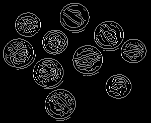
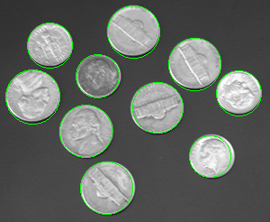

Circular Hough Transform Demonstration
David Young
Demonstrates the use of circle_hough and circle_houghpeaks to find circular objects in an image.
Uses the Image Processing Toolbox
Contents
Setup
Reads an example image, gets its edges and displays them
im = imread('coins.png'); e = edge(im, 'canny'); imshow(e);
Carry out the HT
The circles round the coins have radii in the 20-30 pixels range. To make sure we cover the range, we search radii from 15 to 40 pixels, in steps of 1 pixel.
We select the 'same' option to simplify later processing, and the 'normalise' option to avoid a bias towards finding larger circles.
radii = 15:1:40; h = circle_hough(e, radii, 'same', 'normalise');
Find some peaks in the accumulator
We use the neighbourhood-suppression method of peak finding to ensure that we find spatially separated circles. We select the 10 most prominent peaks, because as it happens we can see that there are 10 coins to find.
peaks = circle_houghpeaks(h, radii, 'nhoodxy', 15, 'nhoodr', 21, 'npeaks', 10);
Look at the results
We draw the circles found on the image, using both the positions and the radii stored in the peaks array. The circlepoints function is convenient for this - it is also used by circle_hough so comes with it.
imshow(im); hold on; for peak = peaks [x, y] = circlepoints(peak(3)); plot(x+peak(1), y+peak(2), 'g-'); end hold off